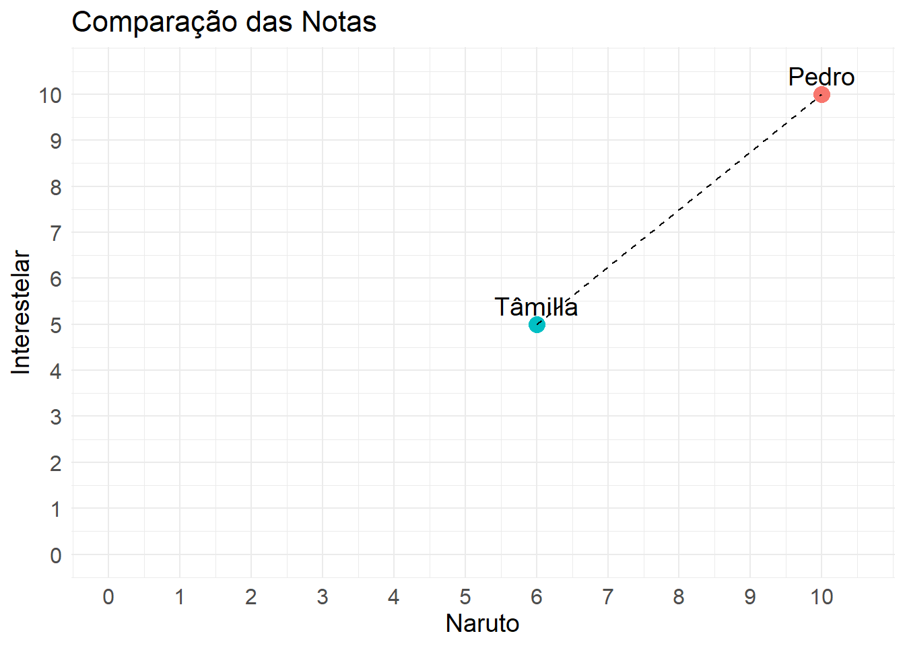
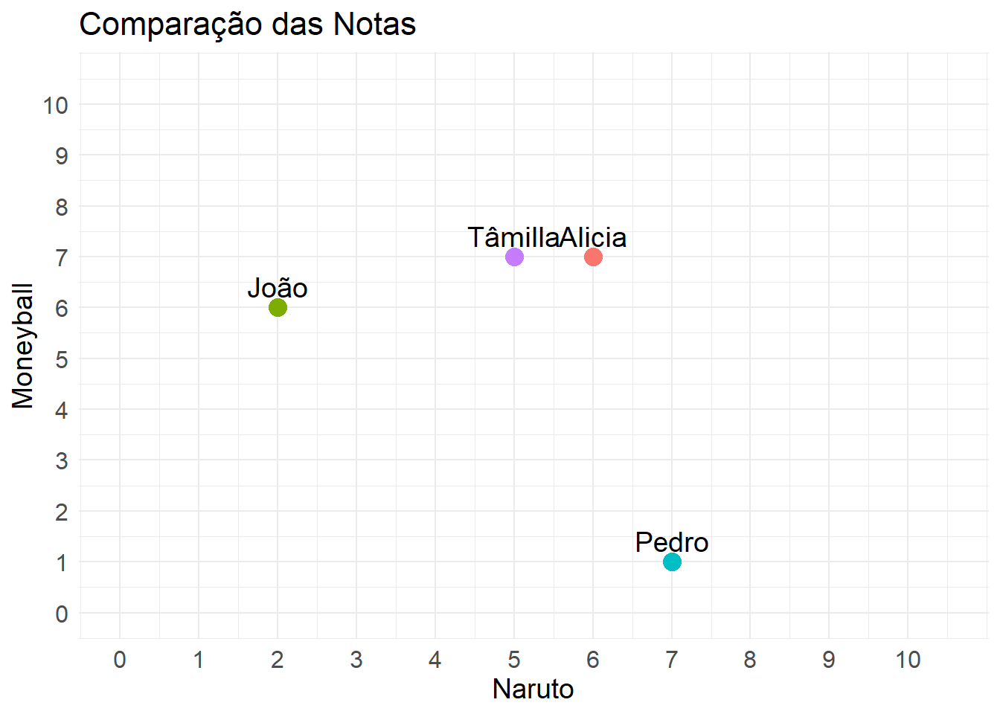

Um resumo do post!
Você já parou para pensar como a Netflix parece saber exatamente qual série você vai querer assistir ou como a Amazon sugere produtos que você nem imaginava que precisava? Parece mágica, mas, na verdade, é tudo graças aos dados e a algumas técnicas inteligentes que ajudam a entender melhor o que você gosta.
O post explica como esses dados podem criar experiências incríveis para nós. Por exemplo, você já assistiu a um filme sem grandes expectativas e acabou adorando? Ou descobriu uma música que ficou tocando o dia todo? A ideia é que, com muitas informações sobre seus gostos, é possível recomendar coisas que você provavelmente vai gostar — e que talvez nem soubesse que existiam.
O texto traz exemplos práticos, como comparar os gostos de duas pessoas para ver o quão parecidas elas são e, a partir disso, sugerir filmes ou séries que uma já viu e a outra não. E isso não se aplica só à Netflix, viu? Pode ser usado em várias áreas: desde escolher um sanduíche no iFood até encontrar um jogador com características semelhantes ao que saiu do seu time favorito.
No fim, a ideia é usar os dados para surpreender você, seja com algo bem parecido com o que você já gosta, ou com uma experiência nova, mas que ainda vai agradar. E o melhor: isso não só melhora sua experiência, como também ajuda os negócios a oferecerem produtos e serviços de forma mais eficiente. É uma situação em que todos saem ganhando!
Como os dados podem nos proporcionar novas experiências?
A Internet e a capacidade de ler seus pensamentos
Você já se perguntou como a “internet” sabe exatamente o que você quer — e até o que você não quer, mas passa a querer? Como a Amazon consegue adivinhar os produtos que você vai desejar consumir? Como as plataformas de streaming, como Netflix e HBO, conseguem prever os filmes mais prováveis de você assistir e criam listas personalizadas para você escolher? Isso tudo é bruxaria?! Ou é a “mágica” da Inteligência Artificial, que surgiu do nada, como um meteoro? Pode ser um pouco de ambos, rs. Mas, no fundo, por trás de toda essa brincadeira, quem está realmente arquitetando esse poder é a Estatística, que, embora não tenha o mesmo glamour de termos como IA, Machine Learning e Data Science, é tão importante quanto o hype que esses conceitos geram.
As experiências por trás dos dados
Um bom filme, uma boa série, um bom produto, um bom jogo, uma boa música, boas novidades em geral, nos geram boas sensações, ainda mais quando nos surpreendem. E aquele filme que você assistiu de forma despretensiosa, mas que acabou se envolvendo tanto, a ponto de dar vontade até de “desver” para reviver aquela sensação. E as músicas desconhecidas que você ouviu pela primeira vez, gostou tanto e passou a reproduzir dezenas de vezes no mesmo dia. E se você tivesse a chance de encontrar experiências tão boas quanto as que já viveu? No mundo da música, por exemplo, você já deve ter ouvido centenas de canções ao longo da vida, mas existem muitas outras que você nunca escutou e que poderiam te agradar tanto quanto sua favorita — ou até mais.
Diante disso, qual seria a melhor forma de encontrar novas experiências, seja qual for o tipo, e não apenas novas, mas também boas? A maneira mais simples de fazer isso é buscar indicações. Quando queremos ver um bom filme, por exemplo, pedimos a sugestão de alguém. Mas esse alguém não pode ser qualquer pessoa; precisa ser alguém que entenda o seu gosto, geralmente as pessoas mais próximas a você, como um amigo. Outra opção é pesquisar, encontrar pessoas na internet que fazem análises de filmes que se alinham ao seu gosto.
Geralmente, com essas indicações, conseguimos ter boas experiências. Mas e se pudéssemos ter uma indicação ainda mais precisa? E se você pudesse contar com milhares de amigos que compartilham os mesmos gostos que você? E esses milhares de amigos pudessem te indicar novas experiências com base nas que eles já viveram? Com a era dos dados, especialmente a digital, isso é totalmente possível. Imagine os usuários da Netflix, por exemplo. Quantos já passaram pela plataforma ao redor do mundo? Milhões? Dentro desse vasto universo, qual a chance de encontrar centenas de pessoas com os mesmos gostos que os seus, com base no histórico de consumo de ambos? E a partir desses “SEUS NOVOS MELHORES AMIGOS”, você poderia receber indicações dos filmes que eles assistiram e você ainda não viu, mas que têm altas chances de você amar?
Pense nisso para compras, como na Amazon. Pense nisso para restaurantes, como no cardápio de um restaurante no iFood. Pense nisso para os esportes, como na indicação de um novo jogador com as mesmas características de um que foi embora. As possibilidades são infinitas.
Com alguns cálculos simples, um toque de estatística e análise de dados, conseguimos melhorar a experiência dos seus clientes, aumentando sua satisfação e a aquisição de novas experiências — que é, no fim das contas, o que levamos da vida. Quanto à otimização do seu próprio negócio, ao indicar novos itens que seu cliente pode gostar (e que, às vezes, sequer sabia da existência ou de que poderiam ser úteis), todos saem ganhando!
Um exemplo, simples, rápido e pratico!
Há aquela máxima de que os opostos se atraem, mas será que isso é mesmo verdade? Mas, o que isso tem a ver com o assunto? Neste exemplo, vou tentar usar essa máxima e até quantificá-la. Primeiramente, para que eu possa indicar algo para alguém, eu preciso ter gostos parecidos com a pessoa. Mas como podemos medir esse “parecido”? Existem várias formas, e uma delas, que calcula a similaridade, também pode calcular o oposto — ou seja, o que não é parecido.
Como exemplo, podemos calcular o quão próximos são os gostos de duas pessoas. No nosso caso, o quão próximos são os meus gostos e os da minha cônjuge. Para isso, vamos atribuir notas a alguns filmes ou séries e, assim, posteriormente, calcularemos, por uma das maneiras possíveis, o quão próximos somos em relação aos gostos cinematográficos.
Mostre o Código
require(DT)
#Criando base de dados da avaliação dos filmes
dados = data.frame(cinefilos = c('Pedro','Tâmilla'),TWD = c(10,10),Naruto = c(10,6),Interestelar = c(10,5), Moneyball = c(10,3),Round6 = c(3,8))
criar_tabela(dados)Uma primeira forma de calcular a semelhança entre nós poderia ser usando a boa e velha distância do ensino fundamental. Usando o Naruto como base, sabemos que o grau de satisfação do Pedro com a série é 10, enquanto a Tâmilla não é muito fã das aventuras de Naruto tentando trazer o Sasuke de volta à vila e dá a série uma nota 6. Podemos imaginar que o Pedro está a 10 km da linha de saída da alta satisfação com o anime, exatamente na linha de chegada. Já a Tâmilla parou no 6 km, após a linha de largada. Assim, a distância entre os dois seria de 4 km, mas para o nosso contexto, podemos considerar isso como uma diferença de 4 notas.
Agora, se incluirmos um novo filme na jogada, como Interestelar, temos que recalcular a diferença entre as notas dos dois. Agora, a diferença entre o Pedro e a Tâmilla é de 5 notas. Podemos somar as diferenças de notas entre os dois filmes, para ter uma ideia geral da semelhança entre os dois. Nesse caso, temos uma diferença de 9 notas.
Porém, apenas somar as diferenças ainda não nos dá uma medida muito interpretativa. Para tornar isso mais útil, podemos calcular a média das diferenças. Como temos dois filmes avaliados por ambos, podemos dividir o total de 9 por 2, resultando em uma diferença média de 4,5 notas por filme. Para tornar isso ainda mais interpretativo, imagine que a diferença máxima entre as notas seria de 10, nesse cenário as opiniões de ambos são totalmente opostas sobre tudo o que assistiram. Se fizermos a conta de 4,5 dividido por 10, temos uma diferença relativa entre ambos. Multiplicando por 100, obtemos uma diferença percentual do gosto entre os dois, que seria de 45%. Para você, isso é muito distante? Para mim, já começa a ser bem divergente quando a diferença é maior que 40%.
É importante ressaltar que, para calcular a diferença entre os elementos, usamos o módulo ou valor absoluto da diferença, para que valores negativos não afetem o resultado. Isso acontece porque tanto a diferença para cima quanto para baixo têm o mesmo peso na semelhança entre os cinéfilos.
Podemos também ter uma noção da distância entre os dois para esses dois filmes de maneira geométrica.
Mostre o Código
#Código para Criar Gráfico
library(ggplot2)
ggplot(dados, aes(x = Naruto, y = Interestelar, label = cinefilos)) +
geom_point(aes(color = cinefilos), size = 4) +
geom_text(vjust = -0.5, hjust = 0.5, size = 5) +
geom_line(aes(group = 1), color = "black", linetype = "dashed") +
scale_x_continuous(limits = c(0, 10.5), breaks = seq(0, 10, 1)) +
scale_y_continuous(limits = c(0, 10.5), breaks = seq(0, 10, 1)) +
labs(title = "Comparação das Notas",
x = "Naruto",
y = "Interestelar",
color = "Cinefilos") +
theme_minimal() +
theme(
axis.text.x = element_text(angle = 0, hjust = 0.5, size = 12),
axis.text.y = element_text(size = 12),
axis.title.x = element_text(size = 14),
axis.title.y = element_text(size = 14),
plot.title = element_text(size = 16),
legend.position = "none"
)
Essa noção geométrica começa a se perder quando temos mais de dois elementos, pois temos apenas dois eixos para plotar os gráficos. Embora, com certo esforço, seja possível visualizar até em três eixos no espaço 3D, ao trabalharmos com mais de quatro eixos ou filmes, a visualização se torna bastante difícil. Agora veremos, na prática, como indicar filmes para mais de dois usuários.
Vamos usar algumas funções para calcular a distância entre os usuários e, assim, determinar qual está mais próximo de qual. Com isso, podemos escolher o usuário mais parecido e indicar filmes que ele tenha assistido, mas que o usuário referência ainda não viu. Antes, veremos uma representação visual com mais de dois cinéfilos em relação ao gosto por dois filmes.
Mostre o Código
#Criando Base de Dados Artificial para 4 Cinéfilos
cinefilos = c('Pedro','Tâmilla','Alicia','João')
n = length(cinefilos)
set.seed(10)
dados = data.frame(cinefilos,TWD = sample(0:10,n,T),Naruto = sample(0:10,n,T),Interestelar = sample(0:10,n,T), Moneyball = sample(0:10,n,T),Round6 = sample(0:10,n,T))
ggplot(dados, aes(x = Naruto, y = Moneyball, label = cinefilos)) +
geom_point(aes(color = cinefilos), size = 4) +
geom_text(vjust = -0.5, hjust = 0.5, size = 5) +
scale_x_continuous(limits = c(0, 10.5), breaks = seq(0, 10, 1)) +
scale_y_continuous(limits = c(0, 10.5), breaks = seq(0, 10, 1)) +
labs(title = "Comparação das Notas",
x = "Naruto",
y = "Moneyball",
color = "Cinefilos") +
theme_minimal() +
theme(
axis.text.x = element_text(angle = 0, hjust = 0.5, size = 12),
axis.text.y = element_text(size = 12),
axis.title.x = element_text(size = 14),
axis.title.y = element_text(size = 14),
plot.title = element_text(size = 16),
legend.position = "none"
)
Visualmente, já podemos observar que, com base nesses dois filmes, os gostos da Tâmilla e da Alicia são bastante próximos. Assim, poderíamos usar o histórico de consumo uma da outra para indicar novos filmes que ambas ainda não assistiram, além dos filmes que receberam melhores avaliações de cada uma. O João também está próximo de ambas, e, caso fosse necessário, poderíamos até usar a opinião dele como complemento para a ajudar a indicar um melhor entretenimento para Tâmilla, acrescentando à opinião do João com a da Alicia.
Na prática, não se utiliza apenas um usuário semelhante para indicar novas experiências, mas sim centenas ou até milhares, dependendo do tamanho do histórico de dados disponível.
Vale notar que, no nosso exemplo, todos assistiram e avaliaram todos os filmes da base de dados. No entanto, na prática, haverá filmes com valores faltantes ou vazios, que correspondem aos filmes que não foram assistidos. Este visual é útil para ter uma noção comparativa dos gostos em relação a apenas dois filmes. Para obter informações mais precisas, podemos calcular a distância entre todos os usuários, usando todos os filmes e séries, e, em seguida, ranquear os mais semelhantes.
Codificando
Aqui, aproveitamos a base de dados criada anteriormente e fazemos algumas alterações para exibir e, posteriormente, calcular as distâncias.
Mostre o Código
require(tidyr)
require(dplyr)
library(tibble)
row.names(dados) = dados$cinefilos
dados = dados |> select(-cinefilos)
criar_tabela(dados)Em seguida vamos usar a distância de manhattan para calcular a semelhança entre os usuários.
Mostre o Código
DIST = as.data.frame(as.matrix(dist(dados[,],method = 'manhattan',upper = T,diag = T)))
DIST <- DIST %>%
rownames_to_column(var = "cinefilo")
DIST <- DIST %>%
pivot_longer(cols = -cinefilo, names_to = "semelhantes", values_to = "valor")
DIST = DIST |> as.data.frame()
DIST$distancia = 'manhattan'
DIST = DIST[DIST$cinefilo != DIST$semelhantes,]
criar_tabela(DIST[,] |> arrange(valor) |> as.data.frame())Acima, temos a distância calculada entre os cinéfilos, de modo que os dados estão ordenados pelos mais semelhantes, mostrando o valor da distância total entre eles, calculado pela distância de Manhattan. Essa distância é nada mais que a diferença absoluta entre as notas dos usuários, para evitar distâncias negativas. A partir desse conjunto, somam-se todas as diferenças. Assim, os cinéfilos mais semelhantes entre si são a Tâmilla e o João, com uma distância de 7.
No entanto, essa ainda não é uma medida tão interpretativa. Portanto, faremos uma alteração nessa métrica, calculando a média da distância pelo total de filmes. Dessa forma, teremos uma estimativa da diferença de gosto entre os usuários por filme.
Mostre o Código
DIST$valor = DIST$valor/ncol(dados)
criar_tabela(DIST[,] |> arrange(valor) |> as.data.frame())Logo, para esses cinéfilos, a distância média das opiniões deles é de 1,4 de nota. Assim, por exemplo, em um cenário hipotético, em que João daria uma nota de 8,4 para um filme da Marvel, a Tâmilla, em média, daria uma nota de 9,8 ou 7.
Como eles são próximos, poderíamos usar o histórico de um para recomendar os filmes mais bem avaliados que o outro ainda não viu.
Nesse exemplo, mostramos uma forma de relacionar os gostos dos usuários com base no seu histórico de consumo, conectando usuários por suas experiências compartilhadas. Além disso, exploramos apenas uma maneira de calcular a semelhança entre eles. A seguir, usaremos outra forma de relacionar os usuários, mas de maneira indireta, relacionando as experiências em si pelas suas características.
Imagine que somos proprietários de um lanchinho que vende sanduíches no iFood e usamos o app AnotaAí. Temos o histórico de pedidos de diversos tipos de sanduíches ao longo do tempo, onde temos acesso às características desses sanduíches, como: carnes, saladas, molhos, bebidas, etc. Veja o exemplo de dados:
Mostre o Código
set.seed(10)
dados = data.frame(sanduiche = paste0('SANDUÍCHE Nº',sample(1:10,5,T)),
hamburguer_bovino = sample(0:2,5,T),
hamburguer_frango = sample(0:2,5,T),
alface = sample(0:2,5,T),
tomate = sample(0:2,5,T),
picles = sample(0:2,5,T),
fritas = sample(0:2,5,T),
barbecue = sample(0:2,5,T),
maionese = sample(0:2,5,T),
cheddar = sample(0:2,5,T),
pimenta = sample(0:2,5,T))
criar_tabela(dados)Agora, em vez de relacionar as experiências dos clientes, relacionamos as características das experiências. A partir das escolhas de um tipo de sanduíche, podemos selecionar quais outros ofereceriam uma experiência diferente, com ingredientes variados. É possível, até mesmo, escolher o quão diferente (em intensidade) essa experiência poderia ser.
A seguir, replicaremos o cálculo das distâncias utilizando o código usado com os cinéfilos.
Mostre o Código
require(tibble)
row.names(dados) = dados$sanduiche
dados = dados |> select(-sanduiche)
DIST = as.data.frame(as.matrix(dist(dados[,],method = 'manhattan',upper = T,diag = T)))
DIST <- DIST %>%
rownames_to_column(var = "sanduiche")
DIST <- DIST %>%
pivot_longer(cols = -sanduiche, names_to = "semelhantes", values_to = "valor")
DIST = DIST |> as.data.frame()
DIST$distancia = 'manhattan'
DIST = DIST[DIST$sanduiche != DIST$semelhantes,]
criar_tabela(DIST[,] |> arrange(valor) |> as.data.frame())Sendo assim, podemos concluir que os sanduíches mais semelhantes são o 7 e o 6. Portanto, se um cliente quiser comprar um ou outro, poderíamos sugerir o outro como uma nova experiência, que não seria tão diferente da anterior. Caso o cliente tenha interesse em “navegar por molhos mais distantes” rs, poderíamos indicar o próximo sanduíche mais parecido com o 7, e assim por diante. Isso seria feito sem utilizar o histórico de consumo dos clientes, mas sim com base nas características de cada experiência.
Como essa técnica pode ajudar o seu negócio ou projeto?
Aumentar a experiência do cliente, promovendo satisfação e fidelização, é fundamental. Por meio de um sistema de recomendação, seria possível indicar experiências mais prováveis de consumo, com base em um histórico passado, e isso pode ser aplicado em qualquer área. Além disso, a otimização das vendas pode ocorrer ao indicar produtos que, muitas vezes, não tinham tanta saída. Esses produtos poderiam ser promovidos por meio de promoções, relacionadas aos que mais vendem, criando até mesmo uma cesta de experiências personalizada para venda.
Falando sobre personalização, o consumo atual, que adota princípios de hiperpersonalização, é eficiente, pois atende à necessidade específica do cliente. Além disso, seria possível personalizar até uma escala de quão parecida seria a experiência do cliente. Em vez de indicar uma experiência extremamente parecida, poderia-se escolher um produto “60%” semelhante, proporcionando uma experiência diferente, mas que ainda oferece uma diferenciação, trazendo o elemento de novidade/surpresa. Isso pode ser interessante, principalmente no contexto dopaminérgico, que estimula o prazer e a recompensa.
As aplicações são muitas e diversas. A seguir, darei alguns exemplos práticos com os quais já trabalhei, e também de outras possibilidades.
Aplicações
Como destaquei bastante no post, a recomendação de entretenimento, como filmes, músicas, jogos, etc., é fundamental para a retenção do público, elevando a experiência e até sugerindo indicações “meio termo”, ou seja, algo parecido, mas nem tanto, promovendo uma experiência mais “nova” ou alternativa. Há algum tempo ajudei a ministrar um minicurso na UFU que ajudava a criar do zero um sistema de recomendação de filmes.
Aplicação no esporte: a recomendação pode ser usada na contratação de jogadores semelhantes, que podem até ter um custo-benefício maior. Em um dos times que passei no eSports, usei essa técnica para encontrar uma jogadora mais semalhante a uma que saiu da equipe.
Além disso, é possível assemelhar os padrões de times semelhantes, com a finalidade de entender componentes estratégicos e táticos. Na minha TCC usei uma técnica de Clusterização para agrupar estilos de jogos semelhantes de times do League of Legends para entender padrões dos dados.
Imagine que você tenha um restaurante, lanchonete ou até um sacolão, e tenha informações sobre os ingredientes e itens escolhidos por cada cliente. Com base nesse histórico, é possível aprimorar a experiência do cliente, recomendando novas experiências, aumentando a eficiência do estoque e dando mais saída a itens que até então eram despercebidos.
Plataformas de viagem podem sugerir destinos, atividades e pacotes personalizados com base no histórico de viagens e nas preferências do usuário. Por exemplo, se um cliente viajou recentemente para praias tropicais e avaliou positivamente, o sistema pode recomendar outros destinos de praia ou até experiências semelhantes, como passeios de barco, mergulho ou gastronomia local.